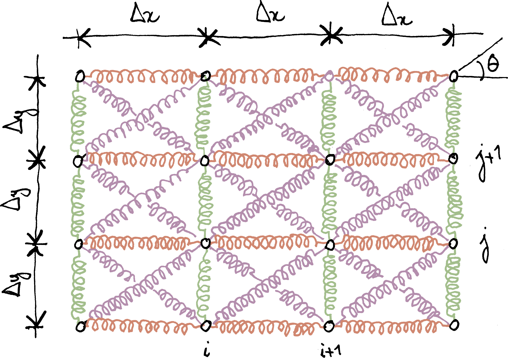
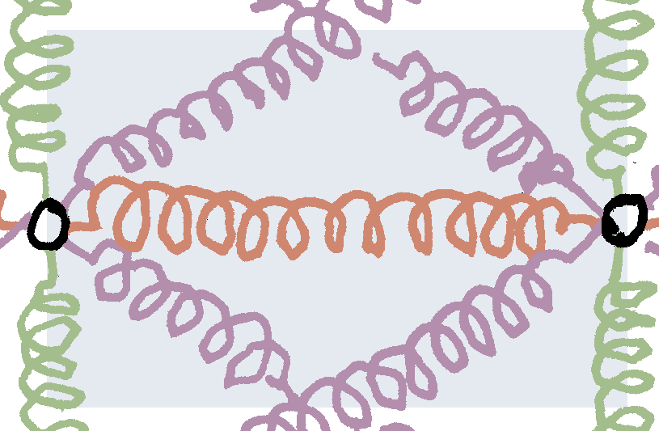
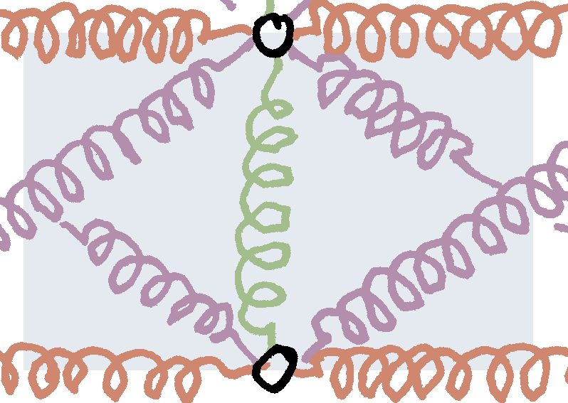
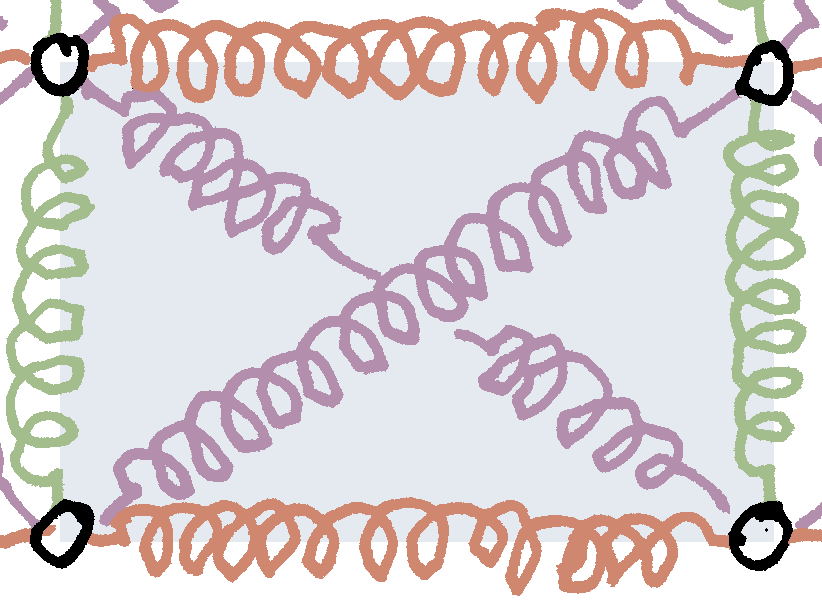

In the previous instalment of this series on homogenization, we discussed volume and ensemble averages for random heterogeneous materials. In view of introducing statistical and representative volume elements, we will introduce in this post our first homogenization example, namely a two-dimensional, rectangular mesh of springs that is loaded in its plane only. We will show that this system can be homogenized as a plate, the extensional stiffnesses of which we will derive in closed-form.
Note that this example is fully deterministic and in fact, periodic. Periodic homogenization provides a rigorous framework for the derivation of its effective properties. The derivation presented here is more heuristic and does not rely on this framework.
The figure below shows the spring mesh considered in this post; \(\ell\) is the length of the diagonal springs. These springs make an angle \(\theta\) with the \(x\)-axis. The grid spacing is therefore \(\Delta x=\ell\cos\theta\) along the \(x\)-axis and \(\Delta y=\ell\sin\theta\) along the \(y\)-axis. The stiffness of the diagonal springs is \(k\); the stiffnesses of the horizontal and vertical springs are \(\chi_x\,k\) and \(\chi_y\,k\), respectively (\(\chi_x\), \(\chi_y\): dimensionless numbers).

It will be convenient to introduce the radius-vector of the mesh nodes
\[ \vec x_{ij}=i\Delta x\,\vec e_x+j\Delta y\,\vec e_y. \]
Similarly, we introduce the mid-points \(\vec x_{i+1/2, j}\), \(\vec x_{i, j+1/2}\) and \(\vec x_{i+1/2, j+1/2}\).
Seen from far away, this mesh behaves as a plate that would be loaded in its plane only. In particular, we will show that when \(\theta=\pi/4\) (square mesh) and \(\chi_x=\chi_y=2\), the homogenized plate is isotropic, with Poisson ratio \(\nu=1/3\) and membrane stiffness
\[ A=\frac{Eh}{1-\nu^2}=3k. \]
Outline of the homogenization strategy
Our strategy relies on the approximation of the elastic energy of the spring mesh. It is recalled that the elastic energy of a spring is fully defined by the displacements of the end-points. In the present case, the end-points are the vertices \(\vec x_{ij}\) of the grid, with displacement \(\vec u_{ij}\). Our aim is to replace the discrete set of springs with a continuous structure. It is natural to assume that the nodal displacements \(\vec u_{ij}\) are the trace of a smooth displacement field, \(\vec u\): \(\vec u_{ij}\simeq\vec u(\vec x_{ij})\).
Owing to the separation of scales, we will also assume that the typical size of the microstructure (namely, the size \(\ell\) of a spring) is small, compared to the typical length scale over which the smooth displacement field \(\vec u\) varies. The first element of our strategy is to perform Taylor expansions of \(\vec u\) with respect to the powers of \(\ell\).
The second element of our strategy is the fact that the elastic energy of the mesh is additive. More precisely, it is the sum of the energies of each spring
\[W=\sum_{i, j}\bigl(W_{i+1/2, j}+W_{i, j+1/2}+W_{i+1/2, j+1/2}\bigr),\]
where \(W_{i+1/2, j}\) (resp. \(W_{i, j+1/2}\), \(W_{i+1/2, j+1/2}\)) denote the elastic energy of the horizontal (resp. vertical, diagonal) spring centered at \(\vec x_{i, j+1/2}\) (resp. \(\vec x_{i, j+1/2}\), \(\vec x_{i+1/2, j+1/2}\)). Note that \(W_{i+1/2, j+1/2}\) is the energy of two diagonal springs.
Each spring of a specific type (horizontal, vertical or diagonal) covers a rectangular “influence zone”. For the horizontal spring centered at \(\vec x_{i+1/2, j}\), the influence zone is the area: \(i\Delta x\leq x\leq\bigl(i+1\bigr)\Delta x\) and \(\bigl(j-1/2\bigr)\Delta y\leq y\leq\bigl(j+1/2\bigr)\Delta y\)

For the vertical spring centered at \(\vec x_{i, j+1/2}\), the influence zone is the area: \(\bigl(i-1/2\bigr)\Delta x\leq x\leq\bigl(i+1/2\bigr)\Delta x\) and \(j\Delta y\leq y\leq\bigl(j+1\bigr)\Delta y\)

Finally, for the diagonal springs centered at \(\vec x_{i+1/2, j+1/2}\), the influence zone is the area: \(i\Delta x\leq x\leq\bigl(i+1\bigr)\Delta x\) and \(j\Delta y\leq y\leq\bigl(j+1\bigr)\Delta y\)

In all three cases, the “influence zone” has the same area, \(\Delta x\,\Delta y=\ell^2\cos\theta\sin\theta\). We write the elastic energy
\[W=\sum_{i, j}\bigl(\frac{W_{i+1/2, j}}{\ell^2\cos\theta\sin\theta}+\frac{W_{i, j+1/2}}{\ell^2\cos\theta\sin\theta}+\frac{W_{i+1/2, j+1/2}}{\ell^2\cos\theta\sin\theta}\bigr)\Delta x\,\Delta y,\]
with \(\Delta x=\ell\cos\theta\) and \(\Delta y=\ell\sin\theta\).
We will show that, when the size of the springs \(\ell\) tends to zero, the various terms of this sum have a limit
\[\frac{W_{i+1/2, j}}{\ell^2\cos\theta\sin\theta} \to w_x[\boldsymbol{\varepsilon}(\vec x_{i+1/2, j})], \quad\frac{W_{i, j+1/2}}{\ell^2\cos\theta\sin\theta} \to w_y[\boldsymbol{\varepsilon}(\vec x_{i, j+1/2})]\] and \[\frac{W_{i+1/2, j+1/2}}{\ell^2\cos\theta\sin\theta}\to w_{xy}[\boldsymbol{\varepsilon}(\vec x_{i+1/2, j+1/2})],\]
where it is noted that the various \(w_\star\) are functions of \(\boldsymbol{\varepsilon}=\operatorname{\mathbf{sym}}\operatorname{\mathbf{grad}}\vec u\). The elastic energy of the spring then reads
\[W=\sum_{i, j}\bigl\{w_x[\boldsymbol{\varepsilon}(\vec x_{i+1/2, j})]+w_y[\boldsymbol{\varepsilon}(\vec x_{i, j+1/2})]+w_{xy}[\boldsymbol{\varepsilon}(\vec x_{i+1/2, j+1/2})]\bigr\}\Delta x\,\Delta y,\]
which can be interpreted as a Riemann sum
\[W=\int\bigl\{w_x[\boldsymbol{\varepsilon}(\vec x)]+w_y[\boldsymbol{\varepsilon}(\vec x)]+w_{xy}[\boldsymbol{\varepsilon}(\vec x)]\bigr\}\mathrm{d} x\,\mathrm{d} y.\]
In other words, homogenization of the spring mesh leads to a continuous mechanical system with elastic energy density \(w=w_x+w_y+w_{xy}\). Note that \(w\) is a function of the strain tensor \(\boldsymbol{\varepsilon}\). Therefore, the homogenized spring mesh behaves as a plate that deforms in its plane only. The expression of the plate effective stiffness will be discussed in the next section.
Elastic energy of the mesh
It is shown in the appendix below that the elastic energy densities of each type of springs have the following expressions
\[w_x=\tfrac12k\,\chi_x \operatorname{cotan}\theta\,\varepsilon_{xx}^2, \quad w_y=\tfrac12k\,\chi_y\tan\theta\,\varepsilon_{yy}^2\]
and
\[\begin{aligned}w_{xy}={}&\tfrac12k\operatorname{cotan}\theta\bigl(1+\cos2\theta\bigr)\varepsilon_{xx}^2+\tfrac12k\tan\theta\bigl(1-\cos2\theta\bigr)\,\varepsilon_{yy}^2\\&+k\sin2\theta\bigl(\varepsilon_{xx}\,\varepsilon_{yy}+2\,\varepsilon_{xy}^2\bigr).\end{aligned}\]
Summing all three contributions, we find the strain energy density of an orthotropic plate that is loaded in its plane only, namely
\[w=\tfrac12A_x\,\varepsilon_{xx}^2+\tfrac12A_y\,\varepsilon_{yy}^2+\tfrac12\bigl(\nu_{xy}\,A_y+\nu_{yx}\,A_x\bigr)\varepsilon_{xx}\,\varepsilon_{yy}+A_{xy}\varepsilon_{xy}^2,\]
with
\[A_x=k\operatorname{cotan}\theta\bigl(1+\cos2\theta+\chi_x\bigr),\] \[A_y=k\tan\theta\bigl(1-\cos2\theta+\chi_y\bigr),\] \[\nu_{xy}\,A_y=\nu_{yx}\,A_x=k\sin2\theta,\] \[A_{xy}=2k\sin2\theta.\]
The Poisson ratios can be expressed as follows \[\nu_{xy}=\frac{1+\cos2\theta}{1-\cos2\theta+\chi_y} \quad\text{and}\quad \nu_{yx}=\frac{1-\cos2\theta}{1+\cos2\theta+\chi_x}.\]
It is interesting to find the conditions under which the above equivalent membrane is isotropic. We must have
\[A=A_x=A_y,\quad\nu=\nu_{xy}=\nu_{yx}\quad\text{and}\quad A_{xy}=\bigl(1-\nu\bigr)A,\]
where \(\nu\) is the unique Poisson ratio and \(A=Eh/(1-\nu^2)\) is the classical membrane stiffness. Since \(A_{xy}=2\nu_{xy}\,A_y=2\nu_{yx}\,A_x\), the third identity leads to \(\nu=1/3\). From the expressions of the Poisson ratios, we deduce that
\[\chi_x=2-4\cos2\theta\quad\text{and}\quad\chi_y=2+4\cos2\theta.\]
Plugging into the expressions of \(A_x\) and \(A_y\), we find
\[A=A_x=A_y=3k\sin2\theta.\]
For a square mesh, \(\theta=\pi/4\), and isotropy requires that \(\chi_x=\chi_y=2\). In other words, if the horizontal and vertical springs are twice as stiff as the diagonal springs, then the mesh behaves as an isotropic plane membrane, with membrane stiffness \(A=3k\) and Poisson ratio \(\nu=1/3\).
Conclusion
We have encountered our first homogenization example. A rectangular mesh of springs can be homogenized as a continuous plate loaded in its plane only. We saw the conditions on the geometry of the mesh and the stiffnesses of the springs for the homogenized plate to behave isotropically.
In the next instalment of this series, we will discuss size effects in a deterministic setting.
Appendix: derivation of the effective elastic energy
In this appendix, we derive the expression of the effective elastic energy of the mesh of springs. We first express the elastic energy of one spring as a function of the strain \(\boldsymbol{\varepsilon}\) (assuming that the homogenized displacement field \(\vec u\) is smooth enough to allow for Taylor expansions).
Then, the general expression of the elastic energy is specialized to each type of springs (horizontal, vertical and diagonal). In all three cases, it is shown that the energy per unit area does not depend on the size \(\ell\) of the spring, which makes evaluation of the limit when \(\ell\to0\) straightforward.
Contribution of one spring
We consider one of the springs of the mesh, located between the end-points \(A\) and \(B\), with radius-vectors \(\vec x_A\) and \(\vec x_B\). We introduce the radius-vector \(\vec x_{AB}\) of the mid-point
\[\vec x_{AB}=\tfrac12\bigl(\vec x_A+\vec x_B\bigr)\]
and we have
\[\vec x_A=\vec x_{AB}-\tfrac12\ell_{AB}\,\vec n_{AB} \quad\text{and}\quad \vec x_B=\vec x_{AB}+\tfrac12\ell_{AB}\,\vec n_{AB},\]
where \(\ell_{AB}\) and \(\vec n_{AB}\) are the length at rest of the spring and unit-vector that orients the spring, respectively. It is recalled (see this post, with slightly different notation) that the elastic energy of the spring is given by the formula
\[W_{AB}=\tfrac12k_{AB}\bigl[\vec n_{AB}\cdot\bigl(\vec u_B-\vec u_A\bigr)\bigr]^2,\]
where \(k_{AB}\) denotes the stiffness of the spring and \(\vec u_A\) and \(\vec u_B\) are the displacements of the two end-points. We assume here that these displacements are given by a smooth map \(\vec u(\vec x)\). Then
\[\vec u_B-\vec u_A =\vec u(\vec x_{AB}+\tfrac12\ell_{AB}\,\vec n_{AB}) -\vec u(\vec x_{AB}-\tfrac12\ell_{AB}\,\vec n_{AB}).\]
Within the framework of homogenization, we assumed that \(\vec u(\vec x)\) is “smooth”, in the sense that the typical length-scale over which this field varies is large, compared to the typical length-scale of the microstructure. In other words, the variations of \(\vec u\) between points \(A\) and \(B\) are small, and we can expand the above expression to first order in \(\ell_{AB}\)
\[\vec u_B-\vec u_A=\ell_{AB}\operatorname{\mathbf{grad}}\vec u(\vec x_{AB})\cdot\vec n_{AB}+\mathcal O(\ell_{AB}^2).\]
To lowest order, the elastic energy of the spring therefore reads
\[W_{AB}=\tfrac12k_{AB}\ell_{AB}^2\bigl[\vec n_{AB}\cdot\operatorname{\mathbf{grad}}\vec u(\vec x_{AB})\cdot\vec n_{AB}\bigr]^2.\]
The above tensor product involves only the symmetric part of the gradient of \(\vec u\), that we will call (surprise, surprise) \(\boldsymbol{\varepsilon}\)
\[\boldsymbol{\varepsilon}(\vec x)=\operatorname{\mathbf{sym}} \operatorname{\mathbf{grad}}\vec u(\vec x).\]
Then
\[W_{AB}=\tfrac12k_{AB}\ell_{AB}^2\bigl[\vec n_{AB}\cdot\boldsymbol{\varepsilon}(\vec x_{AB})\cdot\vec n_{AB}\bigr]^2.\]
This expression can be specialized for all four types of springs that are present in the mesh considered here.
Contribution of the horizontal and vertical springs
For a horizontal spring centered at \(\vec x_{i+1/2, j}\), we have \(\ell_{AB}=\ell\cos\theta\) and \(\vec n_{AB}=\vec e_x\). Therefore, the elastic energy of one horizontal spring reads
\[W_{i+1/2, j}=\tfrac12\chi_xk\ell^2\cos^2\theta\bigl[\varepsilon_{xx}(\vec x_{i+1/2, j})\bigr]^2\]
and, dividing by the area \(\ell\cos\theta\times\ell\sin\theta\) of a cell, we find the elastic energy density
\[w_x=\tfrac12k\chi_x\operatorname{cotan}\theta\,\varepsilon_{xx}^2.\]
For the vertical springs, we would find similarly
\[w_y=\tfrac12k\chi_y\tan\theta\,\varepsilon_{yy}^2.\]
Contribution of the diagonal springs
For the diagonal springs centered at \(\vec x_{i+1/2, j+1/2}\), we have
\[\vec n_{AB}=\zeta\,\cos\theta\,\vec e_x+\sin\theta\,\vec e_y\quad\text{and}\quad\ell_{AB}=\ell,\]
where \(\zeta=+1\) (south-west to north-east spring) or \(\zeta=-1\) (south-east to north-west spring). Therefore, the energy of the diagonal spring
\[ \begin{aligned} W_{i+1/2, j+1/2}={} &\tfrac12k\ell^2\bigl[\bigl(\zeta\,\cos\theta\,\vec e_x+\sin\theta\,\vec e_y\bigr)\cdot\boldsymbol{\varepsilon}\cdot\bigl(\zeta\,\cos\theta\,\vec e_x+\sin\theta\,\vec e_y\bigr)\bigr]^2\\ ={}&\tfrac12k\ell^2\bigl(\cos^2\theta\,\varepsilon_{xx}+\sin^2\theta\,\varepsilon_{yy}+\zeta\sin2\theta\,\varepsilon_{xy}\bigr)^2, \end{aligned} \]
where it is understood that \(\boldsymbol{\varepsilon}\), \(\varepsilon_{xx}\), \(\varepsilon_{yy}\) and \(\varepsilon_{xy}\) are evaluated at \(\vec x_{i+1/2, j+1/2}\). Using the identity \((a+b)^2+(a-b)^2=2(a^2+b^2)\), we find the total energy of the two diagonal springs centered at the same point \(\vec x_{i+1/2, j+1/2}\)
\[ \begin{aligned} W_{xy} &=k\ell^2\bigl[\bigl(\cos^2\theta\,\varepsilon_{xx}+\sin^2\theta\,\varepsilon_{yy}\bigr)^2+\sin^22\theta\,\varepsilon_{xy}^2\bigr]\\ &=k\ell^2\bigl[\cos^4\theta\,\varepsilon_{xx}^2+\sin^4\theta\,\varepsilon_{yy}^2+\sin^22\theta\bigl(\tfrac12\varepsilon_{xx}\,\varepsilon_{yy}+\varepsilon_{xy}^2\bigr)\bigr], \end{aligned} \]
from which we deduce the contribution to the elastic energy density
\[ \begin{aligned} w_{xy}={}&k\ell^2\biggl[\frac{\cos^3\theta}{\sin\theta}\varepsilon_{xx}^2+\frac{\sin^3\theta}{\cos\theta}\varepsilon_{yy}^2+\sin2\theta\bigl(\varepsilon_{xx}\,\varepsilon_{yy}+2\,\varepsilon_{xy}^2\bigr)\biggr]\\ ={}&\tfrac12k\ell^2\bigl[\operatorname{cotan}\theta\bigl(1+\cos2\theta\bigr)\varepsilon_{xx}^2+\tan\theta\bigl(1-\cos2\theta\bigr)\varepsilon_{yy}^2\\ &+2\sin2\theta\bigl(\varepsilon_{xx}\,\varepsilon_{yy}+2\,\varepsilon_{xy}^2\bigr)\bigr]. \end{aligned} \]